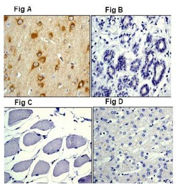
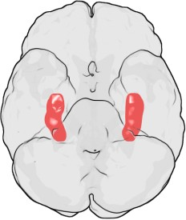

| METALS IN MEDICINE AND THE ENVIRONMENT | |||
| Metals | Aluminum and Alzheimer's Disease | ||
|
Alzheimer’s disease is characterized by a build up of extracellular neural plaque and intracellular neurofibrillary tangles in the noeocortex and hippocampus (responsible for short-term and spatial memory), resulting in decreased cognitive capacity and dementia. Neural plaque is composed of beta-amyloid protein, which is the proteolytically cleaved form of beta-amyloid precursor protein (AbPP). In its unaggregated a helical state, as is found in healthy cerebrospinal fluid, Ab is benign. However, biological conditions may promote the aggregation of AbPP into fibrils, which adopt a b-pleated sheet conformation.(1)  Recently, there has been a significant amount of investigation of the role metal cations play in development of neurodegenerative disorders, especially Alzheimer’s disease. However, through various investigative techniques and experimental approaches, much of the research conducted has yielded conflicting results. Regardless, it is widely accepted that aluminum is a formidable neurotoxic agent, with biological roles including but certainly not limited to impaired signal transduction and free radical damage. (1) Aluminum is present in many everyday commodities, including deodorant, cookware, and food packaging. Thus, it makes sense to investigate its possible role in the onset and development of Alzheimer’s disease.  Figure 2. The hippocampus. Aluminum has also been suggested to act in the hyperphosphorylation of tau proteins. (6) Tau proteins stabilize microtubules, and their hyperphosphorylation promotes the aggregation found in neurofibrillary tangles. Control of regulatory factors and cascades are of interest as well. Transcription or translation of kinases involved in tau regulation may be affected by aluminum. References (1) Gómez, M., Esparza, J., Cabré, M., García, T., Domingo, J. Aluminum exposure through the diet: Metal level in AbPP transgenic mice, a model for Alzheimer’s disease. Toxicology 249, 214-219 (2008). (2) Polizzi, S., Pira, E., Ferrara, M., Bugiani, M., Papaleo, A., Albera, R., Palmi, S. Neurotoxic Effects of Aluminum Among Foundry Workers and Alzheimer’s Disease. NeuroToxicology 23, 761-774 (2002). (3) Pechansky, F., Kessler, F.H.P., von Diemen, L., Bumaguin, D.B., Surratt, H.L., Inciardi, J.A., Brazilian crack users show elevated serum aluminum levels. Rev Bras Psiquiatr 29(1), 39-42 (2007). (4) http://en.wikipedia.org/wiki/Hippocampus (5) Chauhan, V.P.S., Ray, I., Chauhan, A., Wegiel, J., Wisniewski, H.M., Metal Cations Defibrillize the Amyloid Beta-Protein Fibrils. Neurochemical Research 22, 805-809 (1997). (6) Domingo, J., Aluminum and other metals in Alzheimer’s disease: a review of potential therapy with chelating agents. Journal of Alzheimer’s Disease 10, 331-341 (2006). Author: Anders Nelson
|
|||
| Topics | |||
|
|||